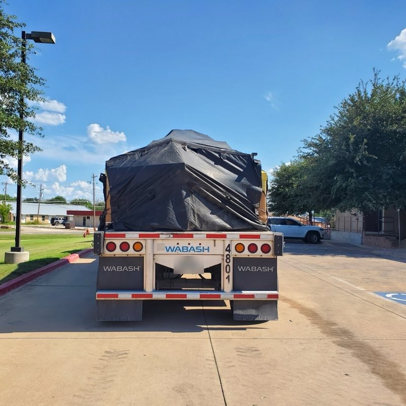
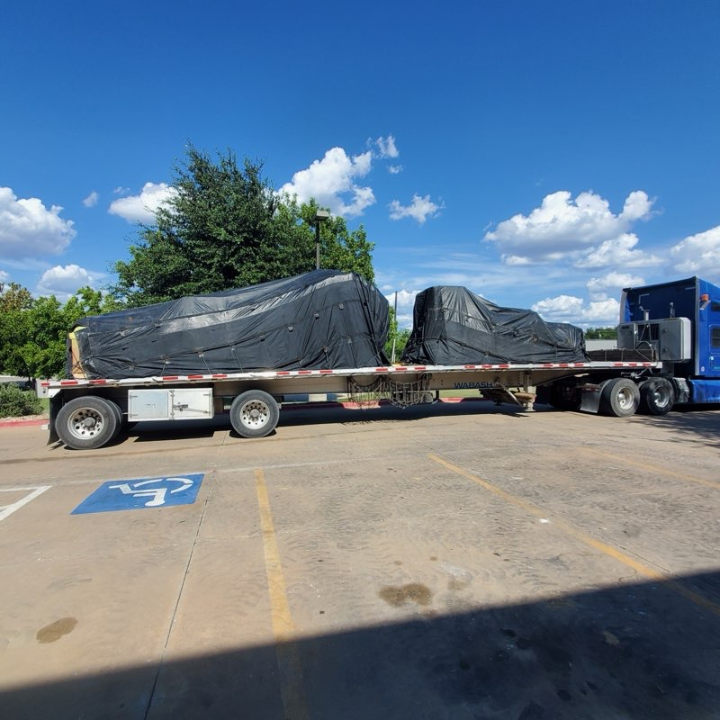
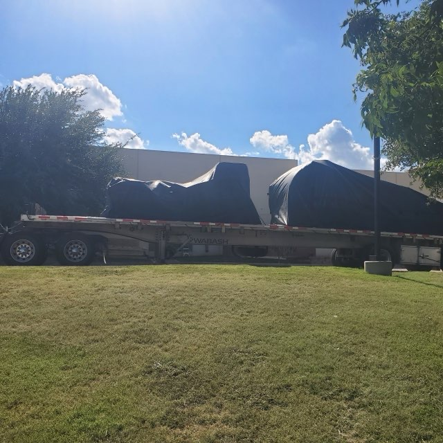

Tarping protects freight from rain, road salt, and debris — it does not secure anything. The load is blocked, chained, and strapped first, sharp edges are padded so the vinyl does not tear, then tarps go on front-to-back so seams shed water like shingles and get bungeed tight with no loose flapping edges. Steel tarps are shorter and heavier for machinery and coils; lumber tarps are longer with drop skirts for tall stacked freight. Expect roughly $50 to $150 in tarp pay per load and 30 to 60 minutes each way.
Tarping is the least glamorous part of open-deck freight and the part that damages the most cargo when it is done badly. It is worth being precise about what a tarp is for: a tarp is weather protection. It secures nothing. Everything underneath is held by chains, straps, and blocking, and the tarp goes on last, over a load that is already finished.

When a load gets tarped
Not everything needs it. Tarping is standard when the freight is:
- Machinery and equipment with painted surfaces, electronics, bearings, or machined faces that rust.
- Anything the shipper or receiver requires covered — many plants and OEMs write it into the BOL, and an untarped arrival is a rejected delivery.
- Steel, coils, and finished metal that road salt and rain will stain or pit.
- Lumber, drywall, and building material that absorbs water and is scrapped when it does.
- Anything running a winter route where brine and de-icer spray off the road for hundreds of miles.
Skip it on raw structural steel, pipe, rebar, concrete products, and used construction equipment where a little weather changes nothing — and where a tarp just adds cost and load time.
Steel tarps vs lumber tarps
The two standard types are sized for two different load shapes.
- Steel tarps — commonly around 24 ft x 27 ft in a 4-piece set, heavier vinyl, shorter drop. Built for dense, low freight: machinery, coils, plate, castings. They are the ones you want over equipment.
- Lumber tarps — commonly around 24 ft x 27 ft with a 6 ft or 8 ft drop skirt, in 8-piece sets. The long skirt covers tall stacked freight down the sides.
Vinyl runs 14 to 18 oz; heavier resists tearing but a full set weighs 130 to 200 lbs a tarp, which is a real handling consideration and a real payload consideration. Smoke tarps — a short tarp over the front of the load — protect the leading face from exhaust and road spray on freight that does not need full coverage.
The sequence that keeps freight dry
Order matters more than technique here.
- Finish the securement. Blocking and bracing set, chains and straps to at least 50% of cargo weight in aggregate working load limit, edge protection in place. If a strap needs adjusting after the tarp is on, the tarp comes off.
- Kill every sharp edge. Corner boards, carpet scraps, and belting over corners, lugs, brackets, and cut steel. A tarp does not tear from rain — it tears from a sharp edge working against vinyl that is fluttering at 65 mph. This single step prevents most tarp failures.
- Front to back, overlapping rearward. Set the first tarp at the front of the load and lap each following tarp over the one behind it, shingle-style, so airflow and water run off the back instead of being scooped into a seam.
- Tension and tie. Bungees from the tarp D-rings to the rub rail and stake pockets, pulled tight enough that nothing flaps. Loose vinyl is what destroys tarps and what peels a corner open at speed.
- Tuck the corners and square the back. A tarp that ends in a loose flap at the rear is an air scoop. Fold, tuck, and secure it flat.
- Re-check within 50 miles and at every stop, tarp and tie-downs both.

What tarping costs and what it costs you
Tarp pay is typically $50 to $150 per load on top of the line haul, more for multi-piece or awkward coverage. That is the visible cost. The invisible ones matter as much:
- Time. 30 to 60 minutes to tarp and again to untarp, per load, per stop. On a multi-drop machinery run that compounds fast.
- Payload. A full tarp set is 400 to 800 lbs of deck weight.
- Risk. Tarping means a person on top of a load, often in wind or rain. It is one of the highest injury-rate tasks in open-deck trucking, and some shippers now prohibit it on their property outright.
- Weather delay. Nobody tarps well in a crosswind, and a load that gets tarped wet arrives wet.
The alternative: don't tarp at all
If you ship covered machinery regularly, the honest answer is often to stop tarping. A Conestoga — a flatbed or step-deck with a rolling tarp on a frame — loads from the top and sides like an open deck and then closes over the freight in a couple of minutes. No climbing, no bungees, no tarp pay, and better protection than vinyl that can flap or tear. The trade is roughly 2,000 to 3,500 lbs of payload and a rate premium, and the load has to fit under the curtain. Full breakdown in how to load and secure a Conestoga trailer.
For freight that is genuinely sensitive — precision equipment, imaging machines, anything that cannot see weather at all — the answer is enclosed or air-ride, not a better tarp.

The short version
- Tarps are weather protection, never securement. Chain and strap the load first, always.
- Pad every sharp edge — that is what actually destroys tarps, not the weather.
- Lap tarps front to back like shingles so water sheds off the rear.
- Tension everything; a flapping edge at 65 mph is a peeled tarp.
- Steel tarps for machinery and coils, lumber tarps with drop skirts for tall stacked freight.
- If you tarp machinery every week, price a Conestoga instead — the tarp pay and the hours add up.
Need a load covered, or want to stop paying to tarp the same freight every week? Tell us what you are shipping and we will put it on the right deck.